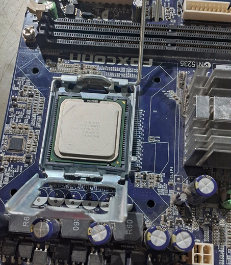
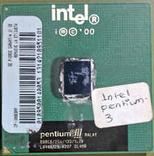
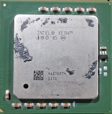
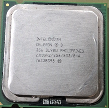
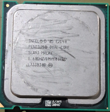
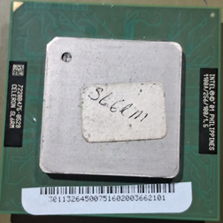

Alumno: Reynaldo Enríquez Zamorano
Materia: Arquitectura de Computadoras
Fecha: 10/10/2025
1. Desconecta el procesador del su socket en las 5 maquinas
2. Toma fotos y explica las características de cada uno
3. Toma foto al modelo del procesador e investiga
Entre las características de un CPU, las más importantes incluyen:
La velocidad de un procesador se refiere a la velocidad de reloj (frecuencia). Esto mide la cantidad de ciclos que ejecuta el CPU por segundo, medida en Hertz, normalmente en gigahertz (GHz). En este caso, un "ciclo" es la unidad básica que mide la velocidad de una CPU. Durante cada ciclo, miles de millones de transistores dentro del procesador se abren y cierran. Así es como la CPU ejecuta los cálculos que figuran en las instrucciones que recibe.
La memoria caché es el intermedio entre CPU y memoria RAM, la cual el procesador tiene acceso directo, casi instantáneo, y en la que se almacenan los datos e instrucciones que más emplea para tenerlos a mano cuando haga falta sin necesidad de tener que volverlos a pedir desde la fuente original. Los procesadores actualmente cuentan con varios niveles de caché bastante diferenciados. Normalmente, los procesadores actuales tienen caché L1, L2, L3, y en algunos casos L4. Cada nivel mayor se aleja mas al procesador, aumenta capacidad y pierde velocidad.
Los núcleos de un procesador son unidades de procesamiento independientes dentro del CPU. Cada núcleo funciona como una unidad de procesamiento completa, capaz de ejecutar instrucciones de manera autónoma. En otras palabras, un procesador de múltiples núcleos tiene la capacidad de realizar múltiples tareas simultáneamente, lo que mejora significativamente el rendimiento y la eficiencia en la ejecución de programas y aplicaciones.
En la práctica, se remueven los procesadores de su Socket.
El socket, que se encuentra en la tarjeta madre, es el sitio donde se instala el procesador. Determina el tipo de procesador que puede instalarse, ya que este elemento no se puede modificar para hacerlo compatible con otros procesadores para los que no ha sido diseñado.

El primer procesador que se removió fue un Intel Pentium 4, modelo 800EB
Otras características de este CPU incluyen que requiere un Socket 370, su arquitectura informática es x86, con sus requerimientos eléctricos siendo mínimo 1.57V y máximo 1.69V, con 1.65V recomendado.

El segundo procesador que se removió fue uno de la familia Intel Xeon E3-1200, el modelo siendo desconocido, pero probablemente siendo un 1270 v6. Aunque tiene diferentes especificaciones, procesadores de esta familia comparten ciertas características:
Otras características de este CPU incluyen que requiere un Socket 1151 o H4, su arquitectura informática es x86, con sus requerimientos eléctricos siendo entre 0.55V y 1.52V.

El tercer procesador que se removió fue un Intel Celeron D, modelo SL98W:
Es de arquitectura x86 y requiere un voltaje entre 1.25V y 1.4V.

El cuarto procesador que se removió fue un Intel Pentium Dual-Core, modelo E2140
Otras características de este CPU incluyen que requiere un Socket 775, su arquitectura informática es x86, con sus requerimientos eléctricos siendo entre 1.6152V y 1.312V.

El ultimo procesador removido fue un Intel Celeron, modelo SL6RM
Requiere un Socket 370 para instalarse en un equipo.
| Categoría | Detalle |
|---|---|
| Tipo | CPU / Microprocesador |
| Segmento de mercado | Escritorio (Desktop) |
| Familia | Intel Pentium III |
| Número de modelo | 800EB |
| Números de parte del CPU | RB80526PZ800256 (OEM/tray) BX80526C800256E (versión en caja) |
| Frecuencia | 800 MHz |
| Velocidad del bus | 133 MHz |
| Multiplicador de reloj | 6 |
| Encapsulado | 370 pines Flip-Chip Pin Grid Array (FC-PGA) 1.95" x 1.95" (4.95 cm x 4.95 cm) |
| Fecha de introducción | 20 de diciembre de 1999 |
| Precio al lanzamiento | $851 USD |
Procesadores de prueba (ES/QS):
| Número de parte | QN23 | QP15 | QS22 | QS81 |
|---|---|---|---|---|
| BX80526C800256E | ||||
| RB80526PZ800256 | + | + | + | + |
Procesadores de producción:
| Número de parte | SL3VE | SL3WB | SL3Y2 | SL4CD | SL4MB | SL52P |
|---|---|---|---|---|---|---|
| BX80526C800256E | + | + | + | + | ||
| RB80526PZ800256 | + | + | + | + |
| Categoría | Detalle |
|---|---|
| Conjunto de instrucciones | x86 |
| Microarquitectura | P6 |
| Nombre en clave del núcleo | Coppermine |
| Stepping del núcleo | cA2, cB0, cC0, cD0 |
| CPUIDs | 681, 683, 686, 68A |
| Proceso de fabricación | 0.18 micras |
| Transistores | 28 millones |
| Tamaño del chip (die) | 104.6 mm² (CPUID 0683h) 90 mm² (CPUID 0686h) 94.7 mm² (CPUID 068Ah) |
| Ancho de datos | 32 bits |
| Ancho del bus de datos | 64 bits |
| Número de núcleos | 1 |
| Número de hilos | 1 |
| Unidad de punto flotante | Integrada |
| Caché de nivel 1 (L1) | 16 KB de instrucciones + 16 KB de datos |
| Caché de nivel 2 (L2) | 256 KB integrada a velocidad completa |
| Multiprocesamiento | Hasta 2 procesadores |
| Parámetro | Valor |
|---|---|
| Voltaje del núcleo (mínimo/recomendado/máximo) | 1.57V / 1.65V / 1.69V 1.62V / 1.7V / 1.74V 1.67V / 1.75V / 1.79V |
| Temperatura de operación (mín./máx.) | 0°C -- 80°C |
| Disipación máxima de potencia | 27.2 W (a 1.7V) 29.05 W (a 1.75V) |
| Potencia de diseño térmico (TDP) | 20.8 W (CPUID 0686h) 24.5 W (CPUID 068Ah) |
| Categoría | Detalle |
|---|---|
| Tipo | CPU / Microprocesador |
| Segmento de mercado | Servidor |
| Familia | Intel Xeon E3-1200 v6 |
| Número de modelo | E3-1270 v6 |
| Números de parte del CPU | CM8067702870648 (OEM/tray) BX80677E31270V6 (versión en caja) |
| Frecuencia base | 3.8 GHz / 3800 MHz |
| Frecuencia turbo máxima | 4.2 GHz / 4200 MHz |
| Velocidad del bus | 8 GT/s (Direct Media Interface) |
| Multiplicador de reloj | 38 |
| Encapsulado | 1151 pines Flip-Chip Land Grid Array (FC-LGA) |
| Tamaño físico | 1.48" × 1.48" (3.75 cm × 3.75 cm) |
| Fecha de introducción | 28 de marzo de 2017 |
| Precio al lanzamiento | $328 USD |
| Número de parte | Procesadores ES/QS | Procesadores de producción |
|---|---|---|
| BX80677E31270V6 | + | |
| CM8067702870648 | + | |
| Desconocido | + |
| Categoría | Detalle |
|---|---|
| Conjunto de instrucciones | x86 |
| Microarquitectura | Kaby Lake |
| Nombre en clave del núcleo | Kaby Lake-S |
| Stepping del núcleo | B0 |
| Proceso de fabricación | 0.014 micras (14 nm) |
| Ancho de datos | 64 bits |
| Número de núcleos | 4 |
| Número de hilos | 8 |
| Unidad de punto flotante | Integrada |
| Caché de nivel 1 (L1) | 4 × 32 KB de instrucciones + 4 × 32 KB de datos |
| Caché de nivel 2 (L2) | 4 × 256 KB |
| Caché de nivel 3 (L3) | 8 MB |
| Memoria física máxima | 64 GB |
| Multiprocesamiento | Uniprocesador |
| Tecnología | Descripción |
|---|---|
| MMX | Instrucciones MMX |
| SSE, SSE2, SSE3, SSSE3, SSE4.1, SSE4.2 | Extensiones SIMD (Streaming SIMD Extensions) |
| AES | Instrucciones de cifrado avanzado (Advanced Encryption Standard) |
| AVX / AVX2 | Extensiones vectoriales avanzadas |
| BMI1 / BMI2 | Instrucciones de manipulación de bits |
| F16C | Conversión de punto flotante de 16 bits |
| FMA3 | Instrucciones de multiplicación y suma fusionada de 3 operandos |
| EM64T (Intel 64) | Tecnología de 64 bits extendida |
| HT (Hyper-Threading) | Tecnología de multihilo simultáneo |
| VT-x / VT-d | Tecnologías de virtualización y de E/S dirigida |
| Turbo Boost 2.0 | Aumento dinámico de frecuencia |
| TSX | Extensiones de sincronización transaccional |
| Tecnología | Descripción |
|---|---|
| NX / XD | Bit de desactivación de ejecución |
| MPX | Extensiones de protección de memoria |
| SGX | Extensiones de seguridad por software (Software Guard Extensions) |
| TXT | Tecnología de ejecución confiable (Trusted Execution Technology) |
| Componente | Descripción |
|---|---|
| Controlador de memoria | 1 controlador, 2 canales por controlador, 2 canales totales |
| Memoria compatible | DDR3L-1866, DDR4-2400 |
| Compatibilidad ECC | Sí |
| Interconexiones adicionales | Direct Media Interface 3.0, PCI Express 3.0 |
| Componente | Descripción |
|---|---|
| Voltaje del núcleo (Vcore) | 0.55 V -- 1.52 V |
| Potencia de diseño térmico (TDP) | 72 W |
| Categoría | Detalle |
|---|---|
| Tipo | CPU / Microprocesador |
| Familia | Intel Celeron D |
| Número de procesador | 336 |
| Números de parte | HH80547RE072CN BX80547RE2800CN |
| Frecuencia | 2.8 GHz |
| Velocidad del bus | 533 MHz |
| Multiplicador de reloj | 21 |
| Tipo de encapsulado | 775 pines FC-LGA (Flip-Chip Land Grid Array) |
| Categoría | Detalle |
|---|---|
| Identificador CPUID | 0F49h |
| Stepping del núcleo | G1 |
| Muestra de calificación (Qualification Sample) | QFPJ |
| Stepping anterior | SL8H9 |
| Tecnología de fabricación | 0.09 micras (90 nm) |
| Caché L2 | 256 KB |
| Tecnología EM64T (Intel 64) | Sí |
| Voltaje del núcleo (Vcore) | 1.25 V -- 1.4 V |
| Temperatura máxima del encapsulado | 67.7 °C |
| Potencia de diseño térmico (TDP) | 84 W |
| Categoría | Detalle |
|---|---|
| Tipo | CPU / Microprocesador |
| Familia | Intel Pentium Dual-Core |
| Número de procesador | E2140 |
| Números de parte | HH80557PG0251M BX80557E2140 BXC80557E2140 |
| Marcado del procesador | 1.60GHz / 1M / 800 / 06 |
| Frecuencia base | 1.6 GHz |
| Velocidad del bus | 800 MHz |
| Multiplicador de reloj | 8 |
| Tipo de encapsulado | 775 pines FC-LGA6 (Flip-Chip Land Grid Array) |
| Categoría | Detalle |
|---|---|
| Identificador CPUID | 06FDh |
| Stepping del núcleo | M0 |
| Muestra de calificación (Qualification Sample) | QYRG |
| Stepping anterior | SLA3J |
| Núcleo del procesador | Allendale |
| Tecnología de fabricación | 0.065 micras (65 nm) |
| Número de núcleos | 2 |
| Caché L2 | 1 MB |
| Tecnología | Descripción |
|---|---|
| EM64T (Intel 64) | Soporte para arquitectura de 64 bits |
| Enhanced SpeedStep | Administración dinámica de voltaje y frecuencia |
| Execute Disable Bit | Protección contra ejecución de código malicioso |
| Extended Halt State | Estado de bajo consumo C1E |
| Extended Stop Grant State | Modo avanzado de ahorro de energía |
| Thermal Monitor 2 | Control térmico avanzado del procesador |
| Componente | Descripción |
|---|---|
| Voltaje del núcleo (Vcore) | 1.162 V -- 1.312 V |
| Temperatura máxima del encapsulado | 73.2 °C |
| Potencia de diseño térmico (TDP) | 65 W |
Estas especificaciones pueden usarse para listados a corto plazo en sitios de subastas y clasificados.
| Categoría | Detalle |
|---|---|
| Tipo | CPU / Microprocesador |
| Familia | Intel Celeron |
| Números de parte | BX80530F1100256 RK80530RY005256 |
| Frecuencia | 1.1 GHz |
| Velocidad del bus | 100 MHz |
| Multiplicador de reloj | 11 |
| Tipo de encapsulado | 370 pines FC-PGA2 (Flip-Chip Pin Grid Array 2) |
| Categoría | Detalle |
|---|---|
| Identificador CPUID | 06B4h |
| Stepping del núcleo | B1 |
| Núcleo del procesador | Tualatin-256 |
| Tecnología de fabricación | 0.13 micras (130 nm) |
| Número de núcleos | 1 |
| Caché L2 | 256 KB |
| Tecnología | Descripción |
|---|---|
| MMX | Instrucciones multimedia optimizadas |
| SSE | Extensiones SIMD para operaciones vectoriales |
| Componente | Descripción |
|---|---|
| Voltaje del núcleo (Vcore) | 1.5 V |
| Temperatura máxima del encapsulado | 69 °C |
| Potencia de diseño térmico (TDP) | 28.9 W |